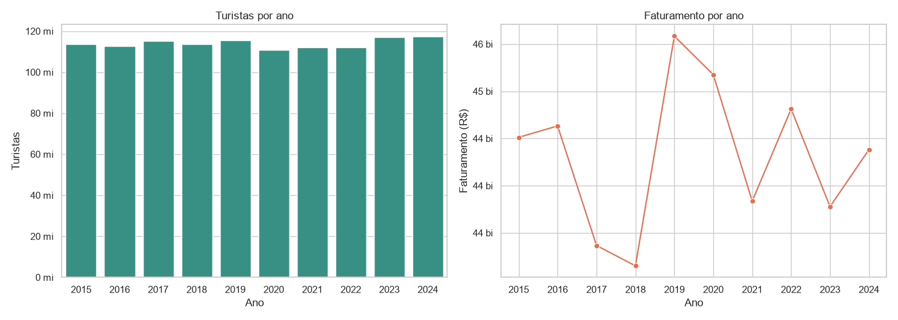
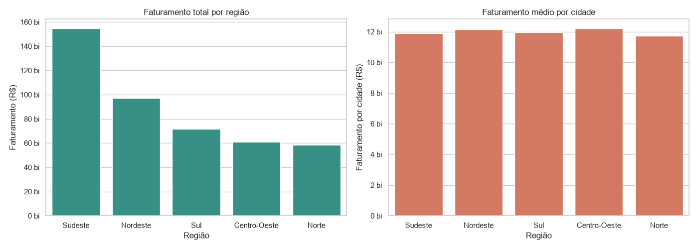
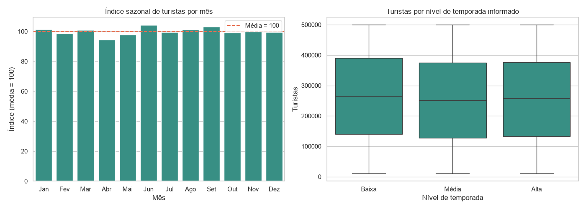
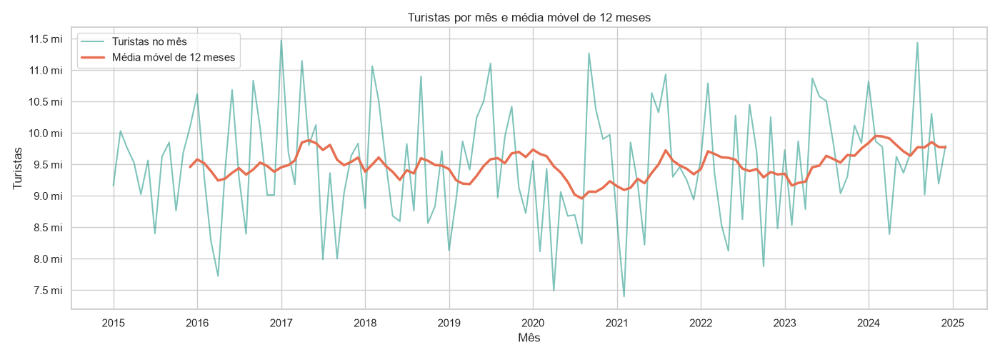
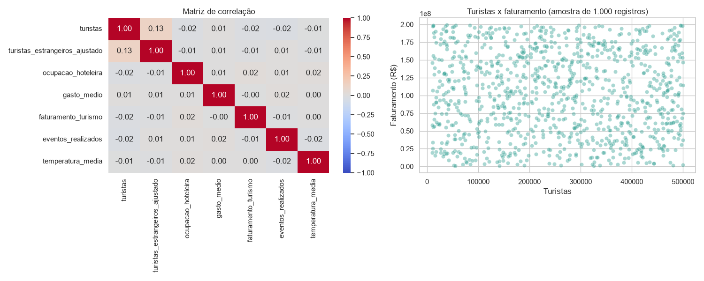
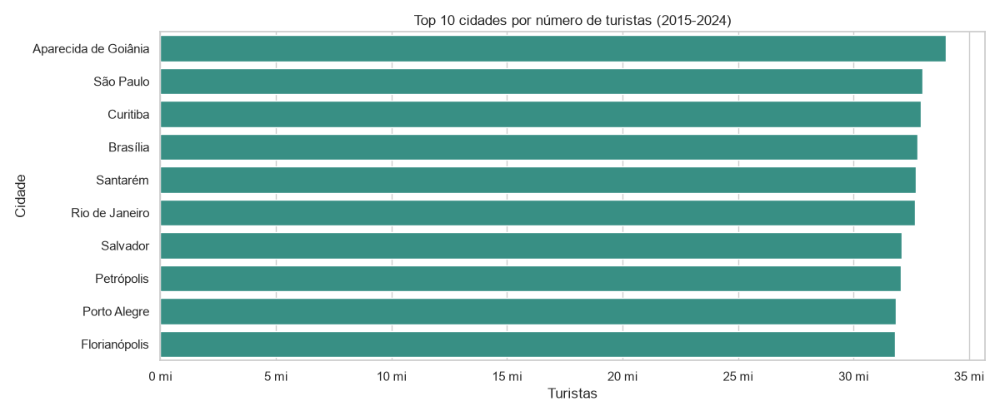

Problema
Como o turismo evoluiu entre 2015 e 2024? Onde estão o fluxo de turistas e o faturamento, existe alta temporada e quais variáveis (ocupação hoteleira, gasto médio, eventos, temperatura) se relacionam com o resultado?
A base é simulada: 4.440 registros mensais (37 cidades x 120 meses), 14 colunas, sem nulos nem duplicados.
Indicadores-chave
1,14 bituristas no período
R$ 443 bifaturamento total
R$ 678gasto médio ponderado
60%ocupação hoteleira média
15%turistas estrangeiros
Gráficos da análise






Principais conclusões
- Fluxo estável: cerca de +3% de 2015 a 2024; 2020 recua apenas 4%, sem o choque da pandemia.
- Sem alta temporada: a coluna
nivel_temporadanão se relaciona com o número de turistas. - Sudeste: cerca de 35% do faturamento por reunir 13 das 37 cidades.
- Sem relações entre variáveis: o faturamento não corresponde a turistas x gasto médio.
- Qualidade: 260 registros com estrangeiros acima do total foram ajustados.
O que o projeto entrega
- Notebook com 10 etapas: leitura, limpeza, atributos, análise exploratória, KPIs, gráficos e conclusão.
- Dashboard Streamlit com filtros múltiplos, KPIs dinâmicos e 8 abas (visão geral, regiões, cidades, sazonalidade, série temporal, correlações, SQL e dados).
- Banco SQLite criado com SQLAlchemy e consultado em SQL dentro do dashboard.
- Séries temporais avançadas (média móvel, índice sazonal) e correlação estatística.
Links
- Repositório: github.com/SEU-USUARIO/projeto-g1
- Dashboard: SEU-APP.streamlit.app
- Notebook: notebooks/analise_turismo.ipynb